Getting started with MetaProViz
Christina Schmidt
Heidelberg UniversitySource:
vignettes/quick-start.Rmd
quick-start.Rmd
First if you have not done yet, install the required dependencies and load the libraries:
# 1. Install Rtools if you haven’t done this yet, using the appropriate version (e.g.windows or macOS).
# 2. Install the latest development version from GitHub using devtools
# devtools::install_github("https://github.com/saezlab/MetaProViz")
library(MetaProViz)
# dependencies that need to be loaded:
library(magrittr)
library(dplyr)
library(rlang)
library(ggfortify)
library(tibble)<div class="progress-bar progress-bar-success" style="width: 100%"></div>1. Loading the example data
<div class="progress-bar progress-bar-success" style="width: 100%"></div>
Here we choose an example datasets, which is publicly available on metabolomics
workbench project PR001418 including metabolic profiles of human
renal epithelial cells HK2 and cell renal cell carcinoma (ccRCC) cell
lines cultured in Plasmax cell culture media (Sciacovelli et al. 2022). Here we use the
integrated raw peak data as example data using the trivial metabolite
name in combination with the KEGG ID as the metabolite
identifiers.
As part of the
MetaProViz package you can load the example data into
your global environment using the function
toy_data():
Intracellular experiment (Intra)
The raw data are available via metabolomics
workbench study ST002224 were intracellular metabolomics of HK2 and
ccRCC cell lines 786-O, 786-M1A and 786-M2A were performed.
We can access the built-in dataset intracell_raw, which
includes columns with Sample information and columns with the measured
metabolite integrated peaks.
data(intracell_raw)
Intra <- intracell_raw%>%
column_to_rownames("Code")| Conditions | Analytical_Replicates | Biological_Replicates | valine-d8 | ADP-ribose | citrulline | |
|---|---|---|---|---|---|---|
| MS55_01 | HK2 | 1 | 1 | 1910140239 | 2417484 | 514024322 |
| MS55_02 | HK2 | 2 | 1 | 2030901280 | 2159520 | 507001076 |
| MS55_03 | HK2 | 3 | 1 | 2001950756 | 2427805 | 551503662 |
| MS55_04 | HK2 | 4 | 1 | 1971520079 | 1988317 | 483751307 |
| MS55_05 | 786-O | 1 | 1 | 2150817213 | 1732016 | 272896668 |
<div class="progress-bar progress-bar-success" style="width: 550%"></div>2. Pre-processing
<div class="progress-bar progress-bar-success" style="width: 550%"></div>MetaProViz includes a pre-processing module with the
function processing() that has multiple parameters to
perform customize data processing.Feature_Filtering applies the 80%-filtering rule on the
metabolite features either on the whole dataset (=“Standard”) (Bijlsma et al. 2006) or per condition
(=“Modified”) (Wei et al. 2018). This
means that metabolites are removed were more than 20% of the samples
(all or per condition) have no detection. With the parameter
cutoff_featurefilt we enable the adaptation of the
stringency of the filtering based on the experimental context. For
instance, patient tumour samples can contain many unknown subgroups due
to gender, age, stage etc., which leads to a metabolite being detected
in only 50% (or even less) of the tumour samples, hence in this context
it could be considered to change the cutoff_featurefilt
from the default (=0.8). If featurefilt = "None", no
feature filtering is performed. In the context of
featurefilt it is also noteworthy that the function
pool_estimation() can be used to estimate the quality of
the metabolite detection and will return a list of metabolites that are
variable across the different pool measurements (pool = mixture of all
experimental samples measured several times during the LC-MS run) .
Variable metabolite in the pool sample should be removed from the
data.
The parameter tic refers to total Ion Count (tic)
normalisation, which is often used with LC-MS derived metabolomics data.
If tic = TRUE, each feature (=metabolite) in a sample is
divided by the sum of all intensity value (= total number of ions) for
the sample and finally multiplied by a constant ( = the mean of all
samples total number of ions). Noteworthy, tic normalisation should not
be used with small number of features (= metabolites), since tic assumes
that on “average” the ion count of each sample is equal if there were no
instrument batch effects (Wulff and Mitchell
2018).
The parameter mvi refers to Missing Value Imputation (mvi)
and if mvi = TRUE half minimum (HM) missing value
imputation is performed per feature (= per metabolite). Here it is
important to mention that HM has been shown to perform well for missing
vales that are missing not at random (MNAR) (Wei
et al. 2018).
Lastly, the function processing() performs outlier
detection and adds a column “Outliers” into the DF, which can be used to
remove outliers. The parameter hotellins_confidence can be
used to choose the confidence interval that should be used for the
Hotellins T2 outlier test (Hotelling
1931).
If your data contain pool samples, you can do
pool_estimation() before applying the
processing() function. This is important, since one should
remove the features (=metabolites) that are too variable prior to
performing any data transformations such as tic as part of the
processing() function. If there is a high variability (high
CVs), you should consider to remove those features from the data. If you
have used internal standard in your experiment you should specifically
check their CV as this would indicate technical issues.You can find
details on this in the extended vignettes:
- Standard
metabolomics data
- Consumption-Release
(CoRe) metabolomics data from cell culture media
Now we will apply the processing() function to example data
and have a look at the output produced. You will notice that all the
chosen parameters and results are documented in messages. All the
results data tables, the Quality Control (QC) plots and outlier
detection plots are returned and can be easily viewed.
PreprocessingResults <- processing(data=Intra[-c(49:58) ,-c(1:3)], #remove pool samples and columns with sample information
metadata_sample=Intra[-c(49:58) , c(1:3)], #remove pool samples and columns with metabolite measurements
metadata_info = c(Conditions = "Conditions",
Biological_Replicates = "Biological_Replicates"),
featurefilt = "Modified",
cutoff_featurefilt = 0.8,
tic = TRUE,
mvi = TRUE,
hotellins_confidence = 0.99,# We perform outlier testing using 0.99 confidence intervall
core = FALSE,
save_plot = "svg",
save_table= "csv",
print_plot = TRUE,
path = NULL)
#> feature_filtering: Here we apply the modified 80%-filtering rule that takes the class information (Column `Conditions`) into account, which additionally reduces the effect of missing values (REF: Yang et. al., (2015), doi: 10.3389/fmolb.2015.00004). Filtering value selected: 0.8
#> 3 metabolites where removed: AICAR, FAICAR, SAICAR
#> Missing Value Imputation: Missing value imputation is performed, as a complementary approach to address the missing value problem, where the missing values are imputing using the `half minimum value`. REF: Wei et. al., (2018), Reports, 8, 663, doi:https://doi.org/10.1038/s41598-017-19120-0
#> Warning: `aes_string()` was deprecated in ggplot2 3.0.0.
#> ℹ Please use tidy evaluation idioms with `aes()`.
#> ℹ See also `vignette("ggplot2-in-packages")` for more information.
#> ℹ The deprecated feature was likely used in the MetaProViz package.
#> Please report the issue at <https://github.com/saezlab/MetaProViz/issues>.
#> This warning is displayed once every 8 hours.
#> Call `lifecycle::last_lifecycle_warnings()` to see where this warning was
#> generated.
#> total Ion Count (tic) normalization: total Ion Count (tic) normalization is used to reduce the variation from non-biological sources, while maintaining the biological variation. REF: Wulff et. al., (2018), Advances in Bioscience and Biotechnology, 9, 339-351, doi:https://doi.org/10.4236/abb.2018.98022
#> Outlier detection: Identification of outlier samples is performed using Hotellin's T2 test to define sample outliers in a mathematical way (Confidence = 0.99 ~ p.val < 0.01) (REF: Hotelling, H. (1931), Annals of Mathematical Statistics. 2 (3), 360-378, doi:https://doi.org/10.1214/aoms/1177732979). hotellins_confidence value selected: 0.99
#> There are possible outlier samples in the data
#> Filtering round 1 Outlier Samples: MS55_29 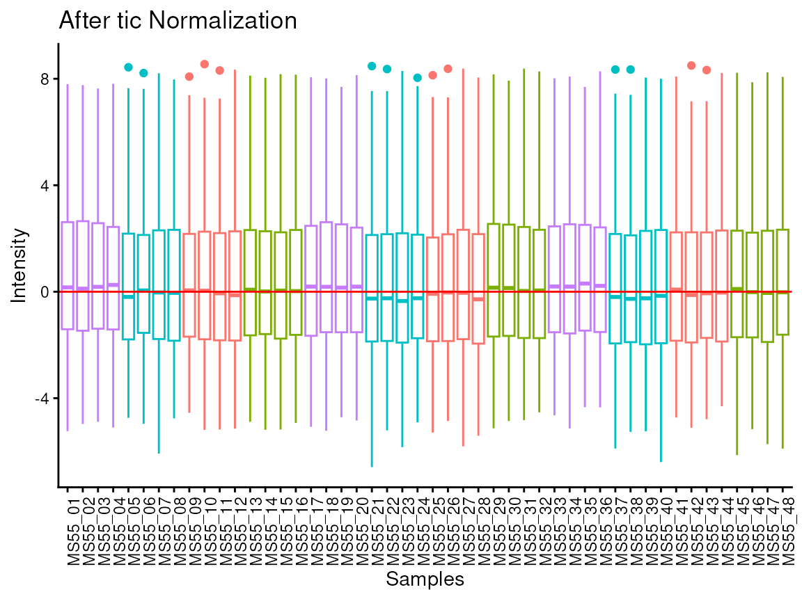
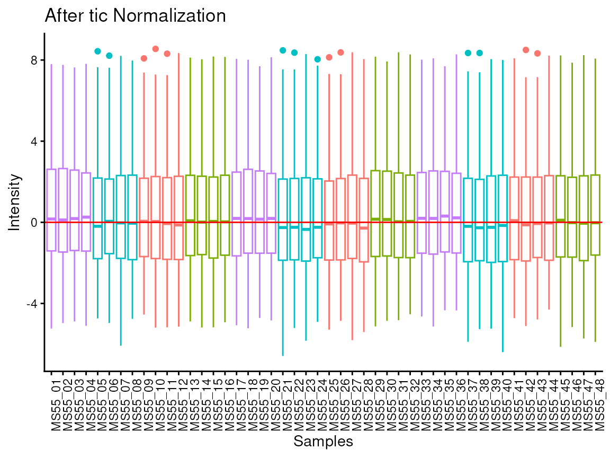
#> Warning: ggrepel: 26 unlabeled data points (too many overlaps). Consider
#> increasing max.overlaps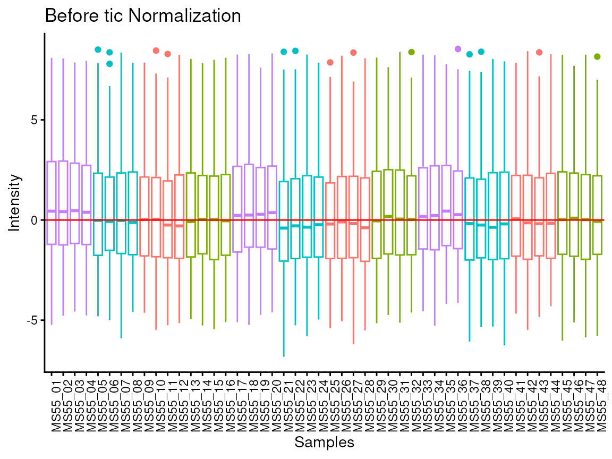
#> Warning: ggrepel: 25 unlabeled data points (too many overlaps). Consider
#> increasing max.overlaps
#> Warning in geom_bar(stat = "identity", fill = barfill, color = barcolor, :
#> Ignoring empty aesthetic: `width`.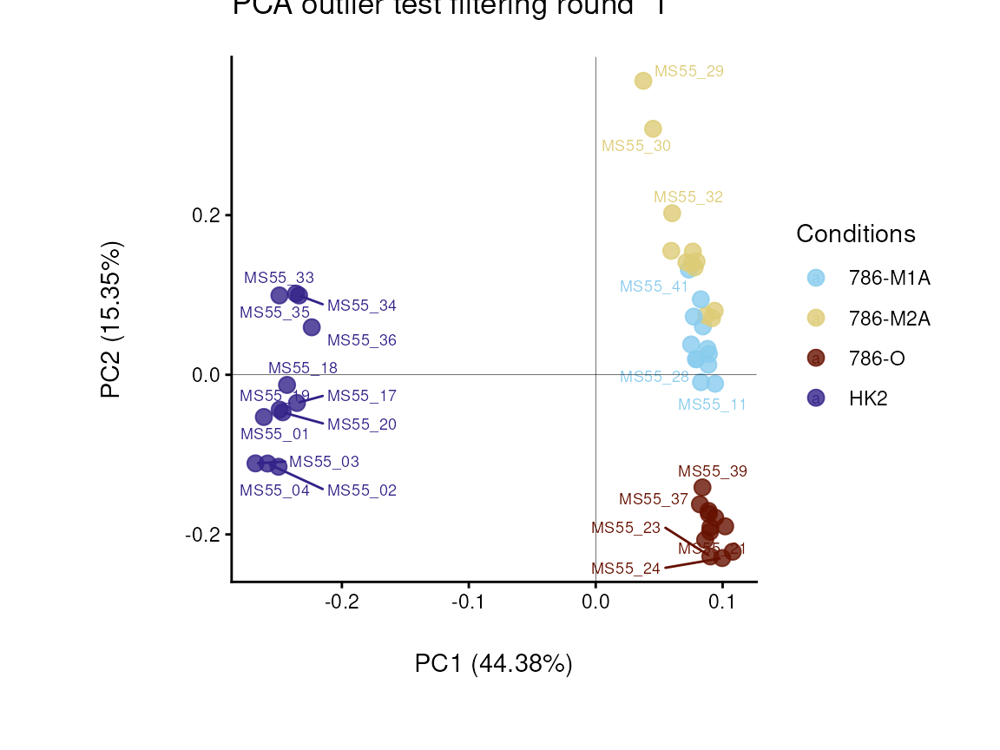
#> Warning in geom_bar(stat = "identity", fill = barfill, color = barcolor, :
#> Ignoring empty aesthetic: `width`.
#> Warning: ggrepel: 16 unlabeled data points (too many overlaps). Consider
#> increasing max.overlaps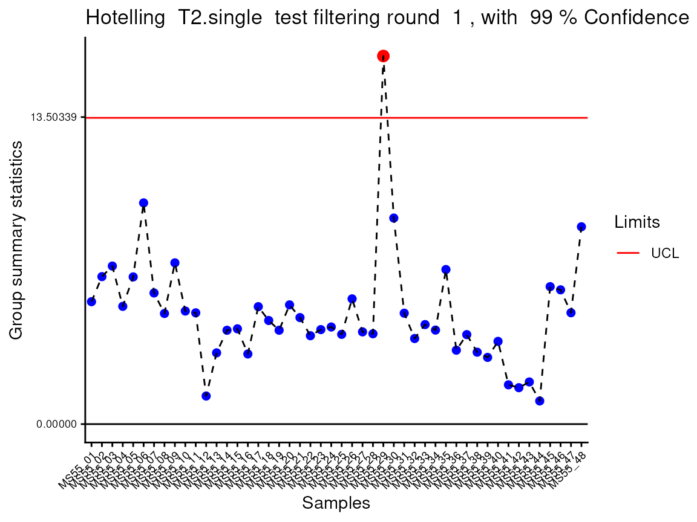
#> Warning: ggrepel: 12 unlabeled data points (too many overlaps). Consider increasing max.overlaps
#> Ignoring empty aesthetic: `width`.
#> Warning in geom_bar(stat = "identity", fill = barfill, color = barcolor, :
#> Ignoring empty aesthetic: `width`.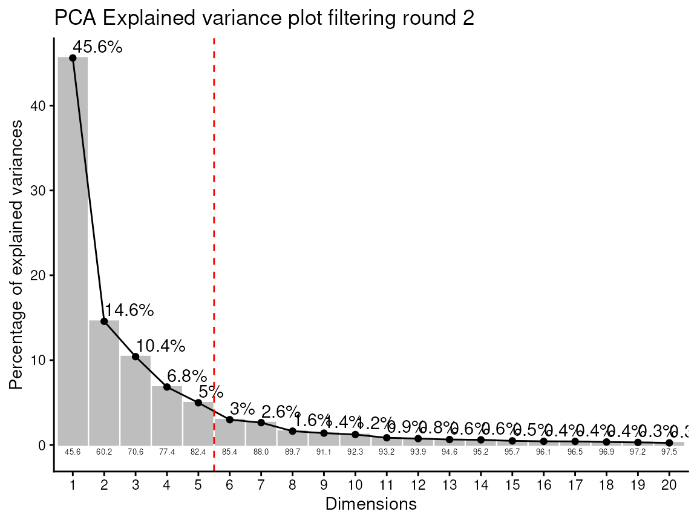
#> Warning: ggrepel: 26 unlabeled data points (too many overlaps). Consider
#> increasing max.overlaps
#> Warning: ggrepel: 24 unlabeled data points (too many overlaps). Consider
#> increasing max.overlaps
#> Warning: ggrepel: 26 unlabeled data points (too many overlaps). Consider
#> increasing max.overlaps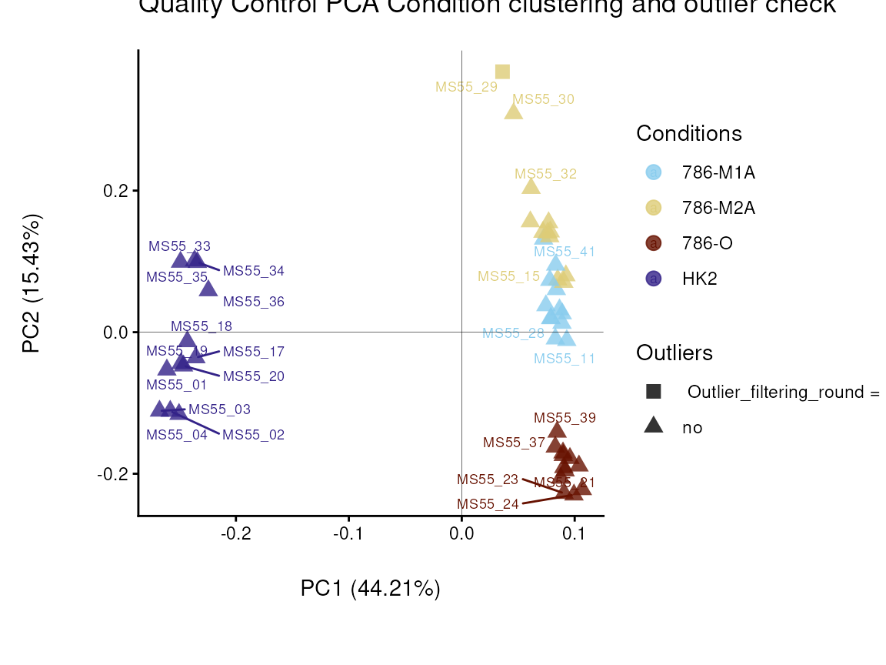
#> Warning: ggrepel: 24 unlabeled data points (too many overlaps). Consider
#> increasing max.overlaps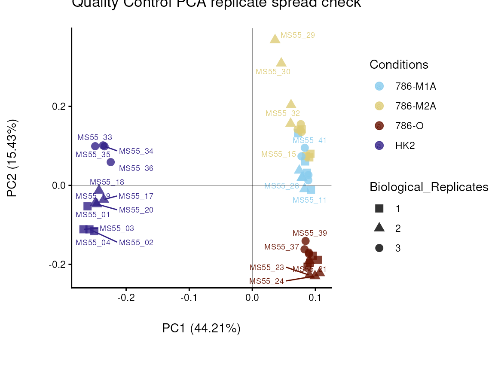
# This is the results table:
Intra_Preprocessed <- PreprocessingResults[["DF"]][["Preprocessing_output"]]| Conditions | Analytical_Replicates | Biological_Replicates | Outliers | valine-d8 | hippuric acid-d5 | 2/3-phosphoglycerate | 2-aminoadipic acid | 2-hydroxyglutarate | |
|---|---|---|---|---|---|---|---|---|---|
| MS55_29 | 786-M2A | 1 | 2 | Outlier_filtering_round_1 | 2387588900 | 4569088590 | 40184147 | 6064712 | 447702444 |
| MS55_30 | 786-M2A | 2 | 2 | no | 2129509827 | 3909434732 | 40901362 | 5928248 | 438592007 |
| MS55_31 | 786-M2A | 3 | 2 | no | 2008257641 | 3820133317 | 45656317 | 6122422 | 423960574 |
| MS55_32 | 786-M2A | 4 | 2 | no | 2023353119 | 3808913048 | 46166031 | 6633984 | 434158266 |
In the output table you can now see the column “Outliers” and for the
Condition 786-M2A, we can see that based on Hotellin’s T2 test, one
sample was detected as an outlier in the first round of filtering.
As part of the processing() function several plots are
generated and saved. Additionally, the ggplots are returned into the
list to enable further modifiaction using the ggplot syntax. These plots
include plots showing the outliers for each filtering round and other QC
plots.
Before we proceed, we will remove the outlier:
As you may have noticed, in this example dataset we have several
biological replicates that were injected (=measured) several times,
which can be termed as analytical replicates. The
MetaProViz pre-processing module includes the function
replicate_sum(), which will do this task and save the
results:
Intra_Preprocessed <- replicate_sum(data=Intra_Preprocessed[,-c(1:4)],
metadata_sample=Intra_Preprocessed[,c(1:4)],
metadata_info = c(Conditions="Conditions", Biological_Replicates="Biological_Replicates", Analytical_Replicates="Analytical_Replicates"))
In case you have performed a Consumption-Release (core) metabolomics
experiment, which usually refers to a cell culture experiment where
metabolomics is performed on the cell culture media, you will also need
to set the parameter core=TRUE in the
processing() function. Now additional data processing steps
are applied:
1. Blank sample: This refers to media samples where no cells have been
cultured in, which will be used as blank. In detail, the mean of the
blank sample of a feature (= metabolite) will be substracted from the
values measured in each sample for the same feature. In the column
“Condition” of the Experimental_design DF, you will need to label your
blank samples with “blank”.
2. Growth factor or growth rate: This refers to the different conditions
and is either based on cell count or protein quantification at the start
of the experiment (t0) and at the end of the experiment (t1) resulting
in the growth factor (t1/t0). Otherwise, one can experimentally estimate
the growth rate of each condition. Ultimately, this measure is used to
normalize the data, since the amount of growth will impact the
consumption and release of metabolites from the media and hence we need
to account for this. If you do not have this information, this will be
set to 1, yet be aware that this may affect the results.
For details see extensive vignette Consumption-Release
(CoRe) metabolomics data from cell culture media.
PCA plot and Heatmap
Using the processed data, we can now use the
MetaProViz visualization module and generate some
overview Heatmaps viz_heatmap() or PCA plots
viz_pca(). 1. PCA
Principal component analysis (PCA) is a dimensionality reduction method
that reduces all the measured features (=metabolites) of one sample into
a few features in the different principal components, whereby each
principal component can explain a certain percentage of the variance
between the different samples. Hence, this enables interpretation of
sample clustering based on the measured features (=metabolites).
We can interactively choose shape and color using the additional
information of interest from our Metadata. Especially for complex data,
such as patient data, it can be valuable to use different demographics
(e.g. age, gender, medication,…) for this.
Here the different cell lines are either control or cancerous, so we can
display this as colour. The cancerous cell lines can further be divided
into metastatic or primary, whcih we display by shape. This shows us
that this is separated on the y-axis and accounts for 30%of the
variance.Here is becomes apparent that the cell status is responsible
for 64% of the variance (x-axis).
#Create the metadata file:
MetaData_Sample <- Intra_Preprocessed[,c(1:2)]%>%
mutate(Celltype = case_when(Conditions=="HK2" ~ 'Healthy',
Conditions=="786-O" ~ 'Primary Tumour',
TRUE ~ 'Metastatic Tumour'))%>%
mutate(Status = case_when(Conditions=="HK2" ~ 'Healthy',
TRUE ~ 'Cancer'))
#Make PCA plot
viz_pca(metadata_info= c(color="Celltype", shape="Status"),
metadata_sample= MetaData_Sample,
data= Intra_Preprocessed[,-c(1:5)],
plot_name = "Cell type")Figure: Do the samples cluster for the Cell type?
Similarly, we can use the data and sample information to make a
heatmap:
viz_heatmap(data = Intra_Preprocessed[,-c(1:4)],
metadata_sample = MetaData_Sample,
metadata_info = c(color_Sample = list("Conditions","Biological_Replicates", "Celltype", "Status")))
Colour for sample metadata.
<div class="progress-bar progress-bar-success" style="width: 550%"></div>3. Differential Metabolite Analysis
<div class="progress-bar progress-bar-success" style="width: 550%"></div>Differential Metabolite Analysis (dma) is used to
compare two conditions (e.g. Tumour versus Healthy) by calculating the
Log2FC, p-value, adjusted p-value and t-value. With the different
parameters pval and padj one can choose the
statistical tests such as t.test, wilcoxon test, limma, annova, kruskal
walles, etc. (see function reference for more information).
As input one can use the processed data we have generated using the
processing module, but here one can of course use any DF
including metabolite values, even though we recommend to normalize the
data and remove outliers prior to dma. Moreover, we require information
which condition a sample corresponds to.
By defining the numerator and denominator as part of the
metadata_info parameter, it is defined which comparisons
are performed:
1. one_vs_one (single comparison):
numerator=“Condition1”, denominator =“Condition2”
2. all_vs_one (multiple comparison): numerator=NULL,
denominator =“Condition”
3. all_vs_all (multiple comparison): numerator=NULL,
denominator =NULL (=default)
Noteworthy, if you have not performed missing value imputation and hence
your data includes NAs or 0 values for some features, this is how we
deal with this in the dma() function:
1. If you use the parameter pval="lmFit", limma is
performed. Limma does a baesian fit of the data and substracts
Mean(Condition1 fit) - Mean(Condition2 fit). As such, unless all values
of a feature are NA, Limma can deal with NAs. 2. Standard Log2FC:
log2(Mean(Condition1)) - log2(Mean(Condition2)) a. If all values of the
replicates of one condition are NA/0 for a feature (=metabolite):
Log2FC= Inf/-Inf and the statistics will be NA
b. If some values of the replicates of one condition are NA/0 for a
feature (=metabolite): Log2FC= positive or negative value, but the
statistics will be NA
It is important to mention that in case of pval="lmFit", we
perform log2 transformation of the data as prior to running limma to
enable the calculation of the log2FC, hence do not provide log2
transformed data.
Here, the example data we have four different cell lines, healthy (HK2)
and cancer (ccRCC: 786-M1A, 786-M2A and 786-O), hence we can perform
multiple different comparisons. For simplicity, we will compare 786-M1A
versus HK2. The results can be automatically saved and all the results
are returned in a list with the different data frames. If parameter
plot=TRUE, an overview Volcano plot is generated and saved.
# Perform multiple comparison All_vs_One using annova:
DMA_Res <- dma(data=Intra_Preprocessed[,-c(1:3)], #we need to remove columns that do not include metabolite measurements
metadata_sample=Intra_Preprocessed[,c(1:3)],#only maintain the information about condition and replicates
metadata_info = c(Conditions="Conditions", Numerator="786-M1A" , Denominator = "HK2"),# we compare 786-M1A_vs_HK2
pval ="t.test",
padj="fdr")
#> There are no NA/0 values
#> Warning: Computation failed in `stat_bin()`.
#> Caused by error in `bin_breaks_width()`:
#> ! The number of histogram bins must be less than 1,000,000.
#> ℹ Did you make `binwidth` too small?
#> Warning: Removed 142 rows containing non-finite outside the scale range
#> (`stat_bin()`).
#> Warning: Computation failed in `stat_bin()`.
#> Caused by error in `bin_breaks_width()`:
#> ! The number of histogram bins must be less than 1,000,000.
#> ℹ Did you make `binwidth` too small?
#> Warning: Removed 142 rows containing non-finite outside the scale range
#> (`stat_density()`).
#> Warning: Computation failed in `stat_bin()`.
#> Caused by error in `bin_breaks_width()`:
#> ! The number of histogram bins must be less than 1,000,000.
#> ℹ Did you make `binwidth` too small?
#> Warning: Removed 137 rows containing non-finite outside the scale range
#> (`stat_bin()`).
#> Warning: Computation failed in `stat_bin()`.
#> Caused by error in `bin_breaks_width()`:
#> ! The number of histogram bins must be less than 1,000,000.
#> ℹ Did you make `binwidth` too small?
#> Warning: Removed 137 rows containing non-finite outside the scale range
#> (`stat_density()`).
#> Warning: Using `size` aesthetic for lines was deprecated in ggplot2 3.4.0.
#> ℹ Please use `linewidth` instead.
#> ℹ The deprecated feature was likely used in the EnhancedVolcano package.
#> Please report the issue to the authors.
#> This warning is displayed once every 8 hours.
#> Call `lifecycle::last_lifecycle_warnings()` to see where this warning was
#> generated.
#> Warning: The `size` argument of `element_line()` is deprecated as of ggplot2 3.4.0.
#> ℹ Please use the `linewidth` argument instead.
#> ℹ The deprecated feature was likely used in the EnhancedVolcano package.
#> Please report the issue to the authors.
#> This warning is displayed once every 8 hours.
#> Call `lifecycle::last_lifecycle_warnings()` to see where this warning was
#> generated.
#> Warning: Removed 142 rows containing non-finite outside the scale range
#> (`stat_bin()`).
#> Warning: Computation failed in `stat_bin()`.
#> Caused by error in `bin_breaks_width()`:
#> ! The number of histogram bins must be less than 1,000,000.
#> ℹ Did you make `binwidth` too small?
#> Warning: Removed 142 rows containing non-finite outside the scale range
#> (`stat_density()`).
#> Warning: Removed 142 rows containing non-finite outside the scale range
#> (`stat_bin()`).
#> Warning: Computation failed in `stat_bin()`.
#> Caused by error in `bin_breaks_width()`:
#> ! The number of histogram bins must be less than 1,000,000.
#> ℹ Did you make `binwidth` too small?
#> Warning: Removed 142 rows containing non-finite outside the scale range
#> (`stat_density()`).
#> Warning: Removed 137 rows containing non-finite outside the scale range
#> (`stat_bin()`).
#> Warning: Computation failed in `stat_bin()`.
#> Caused by error in `bin_breaks_width()`:
#> ! The number of histogram bins must be less than 1,000,000.
#> ℹ Did you make `binwidth` too small?
#> Warning: Removed 137 rows containing non-finite outside the scale range
#> (`stat_density()`).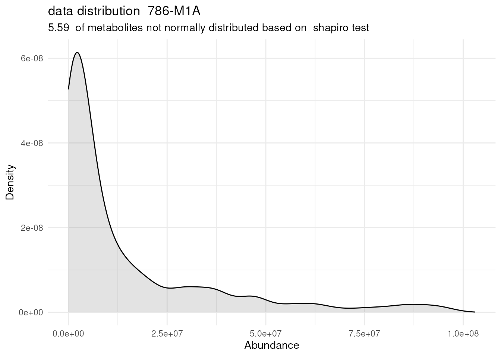
#> Warning: Removed 137 rows containing non-finite outside the scale range
#> (`stat_bin()`).
#> Warning: Computation failed in `stat_bin()`.
#> Caused by error in `bin_breaks_width()`:
#> ! The number of histogram bins must be less than 1,000,000.
#> ℹ Did you make `binwidth` too small?
#> Warning: Removed 137 rows containing non-finite outside the scale range
#> (`stat_density()`). 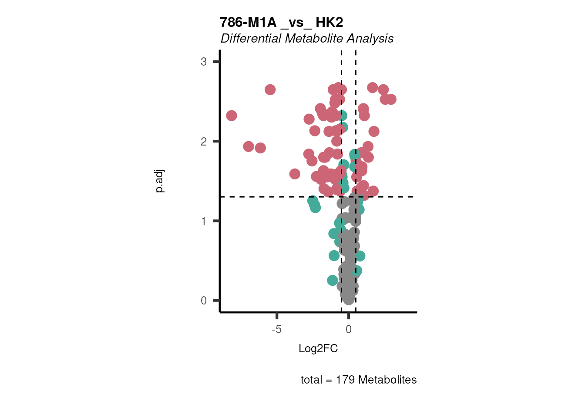
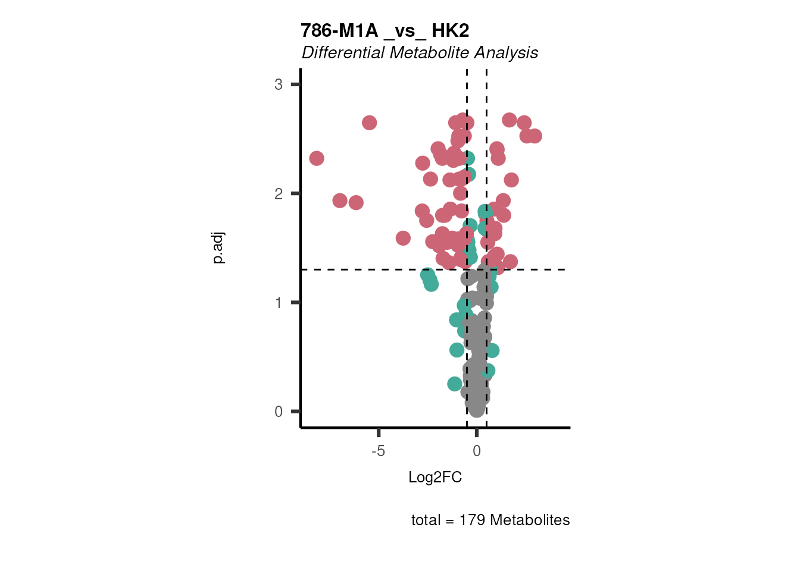
# Inspect the dma results tables:
DMA_786M1A_vs_HK2 <- DMA_Res[["dma"]][["786-M1A _vs_ HK2"]]| Metabolite | Log2FC | 786-M1A_1 | 786-M1A_2 | 786-M1A_3 | HK2_1 | HK2_2 | HK2_3 | p.val | p.adj | t.val |
|---|---|---|---|---|---|---|---|---|---|---|
| isovalerylcarnitine | 0.9170474 | 29656656 | 30619594 | 32262097 | 19753215 | 15537391 | 13716941 | 0.0070624 | 0.0234206 | -7.4689200974348 |
| lactate | 0.3015843 | 721790170 | 654376727 | 761914317 | 565048879 | 499136450 | 670570164 | 0.0973061 | 0.1662329 | -2.27995828643078 |
| lysine | 0.4006104 | 39846551 | 37827659 | 40500396 | 27919226 | 25870671 | 35731826 | 0.0775608 | 0.1388337 | -3.07082976561226 |
| malate | 0.0981352 | 2244208988 | 2276823115 | 2058245048 | 1940397414 | 2064435997 | 2141789027 | 0.1853322 | 0.2764539 | -1.6049019168411 |
| malonate | 0.1701143 | 7457170 | 8327513 | 6230908 | 5918003 | 6198577 | 7450266 | 0.3518985 | 0.4700734 | -1.06115449290904 |
In case you have performed a Consumption-Release (core) metabolomics
experiment, which usually refers to a cell culture experiment where
metabolomics is performed on the cell culture media, you will also need
to set the parameter core=TRUE in the dma()
function. In a core experiment the normalized metabolite values can be
either a negative value, if the metabolite has been consumed from the
media, or a positive value, if the metabolite has been released from the
cell into the culture media. Since we can not calculate a Log2FC using
negative values, we calculate the absolute difference between the mean
of Condition 1 versus the mean of Condition 2. The absolute difference
is log2 transformed in order to make the values comparable between the
different metabolites, resulting in the Log2Dist. The result doesn’t
consider whether one product is larger than the other; it only looks at
the magnitude of their difference. to reflect the direction of change
between the two conditions we multiply with -1 if C1 < C2. By setting
the paramteter core = TRUE, instead of calclulating the Log2FC, the Log2
Distance is calculated. For details see extensive vignette Consumption-Release
(CoRe) metabolomics data from cell culture media.
Volcano Plots
In general,we have three different Plot_Settings, which
will also be used for other plot types such as lollipop graphs.1. "Standard" is the standard version of the
plot, with one dataset being plotted.2. "Conditions" here two or more datasets will
be plotted together.3. "PEA" stands for Pathway Enrichment
Analysis, and is used if the results of an GSE analysis should be
plotted as here the figure legends will be adapted.
Using the dma results, we can now use the MetaProViz
visualization module and generate further customized Volcano plots
viz_volcano():
- To plot the metabolite names you can change the paramter
select_label from its default
(select_label="") to NULL and the metabolite names will be
plotted randomly or you can also pass a vector with Metabolite names
that should be labeled.
- By providing additional feature or sample information, you can color
code and/or shape the dots on the volcano plot.
- Based on feature information (i.e. pathways), you can also create
individual plots, one for each pathway.
For detailed exaples check out
3. Run MetaProViz Visualisation in the vignettes Standard
metabolomics data or Consumption-Release
(CoRe) metabolomics data from cell culture media
<div class="progress-bar progress-bar-success" style="width: 550%"></div>3. Enrichment Analysis and Prior knowledge
<div class="progress-bar progress-bar-success" style="width: 550%"></div>Over Representation Analysis (ORA) is a enrichment method that
determines if a set of features (i.e. metabolic pathways) are
over-represented in the selection of features (=metabolites) from the
data in comparison to all measured features (metabolites) using the
Fishers exact test. The selection of metabolites are usually the most
altered metabolites in the data, which can be selected by the top and
bottom t-values. Before we can perform ORA on the dma results, we have
to ensure that the metabolite names match with the metabolite IDs of the
prior knowledge (PK).
Match IDs with PK
As part of the MetaProViz package you can access
metabolite prior knowledge with the collection of metabolite sets
MetSigDB (Metabolite signature database) for pathway enrichment
analysis, compound class enrichment analysis, and by using specific PK
databases, it can be used to study the connection of metabolites and
receptors or transporters. In metabolite PK, the many different PK
databases and resources pose issues like metabolite identifiers
(e.g. KEGG, HMDB, PubChem, etc.) are not standardized across databases,
and the same metabolite can have multiple identifiers in different
databases. This is known as the many-to-many mapping problem. If you
want to know more on how to translate ids, quantify the mapping of your
data to the prior knwoeldge resource, increase the mapping, etc. have a
look at our dedicated vignette, Prior
Knowledge Access & Integration.
Here we will use the KEGG pathways (Kanehisa and
Goto 2000), hence we have to ensure that the metabolite names
match with the KEGG IDs or KEGG trivial names.
#--------Add metabolite IDs to our example data:
# 1. Load Feature metainformation of our example data
data(cellular_meta)
MappingInfo <- cellular_meta
# 2. Merge with our differential results (FYI: you can also do this automatically as part of the dma function using the parameter metadata_feature)
ORA_Input <- merge(DMA_786M1A_vs_HK2,
MappingInfo,
by= "Metabolite",
all.x=TRUE)%>%
dplyr::filter(!is.na(KEGGCompound))%>%#remove features without KEGG ID
tibble::column_to_rownames("KEGGCompound")%>%
dplyr::select(-Metabolite)
#--------Load KEGG pathways:
KEGG_Pathways <- metsigdb_kegg()Run ORA
In general, the input_pathway requirements are column
“term”, “Metabolite” and “Description”, and the data
requirements are column “t.val” and column “Metabolite”.
#Perform ORA
DM_ORA_res <- standard_ora(data= ORA_Input , #Input data requirements: column `t.val` and column `Metabolite`
metadata_info=c(pvalColumn="p.adj", percentageColumn="t.val", PathwayTerm= "term", PathwayFeature= "Metabolite"),
input_pathway=KEGG_Pathways,#Pathway file requirements: column `term`, `Metabolite` and `Description`. Above we loaded the Kegg_Pathways using Load_KEGG()
pathway_name="KEGG")
# Lets check how the results look like:
DM_ORA_786M1A_vs_HK2 <- DM_ORA_res[["ClusterGosummary"]]| GeneRatio | BgRatio | RichFactor | FoldEnrichment | zScore | pvalue | p.adjust | qvalue | Metabolites_in_pathway | Count | Metabolites_in_Pathway | percentage_of_Pathway_detected |
|---|---|---|---|---|---|---|---|---|---|---|---|
| 2/14 | 18/130 | 0.1111111 | 1.0317460 | 0.0502165 | 0.6103571 | 0.9360814 | 0.9360814 | L-Alanine/L-Tryptophan | 2 | 144 | 1.39 |
| 6/14 | 33/130 | 0.1818182 | 1.6883117 | 1.5841129 | 0.1058932 | 0.9360814 | 0.9360814 | Glutathione/Hydroxyproline/L-Alanine/L-Threonine/sn-Glycerol 3-phosphate/Thiamine | 6 | 129 | 4.65 |
| 1/14 | 14/130 | 0.0714286 | 0.6632653 | -0.4615861 | 0.8148272 | 0.9360814 | 0.9360814 | L-Alanine | 1 | 27 | 3.70 |
| 3/14 | 19/130 | 0.1578947 | 1.4661654 | 0.7610010 | 0.3343601 | 0.9360814 | 0.9360814 | L-Alanine/L-Threonine/L-Tryptophan | 3 | 52 | 5.77 |
| 1/14 | 11/130 | 0.0909091 | 0.8441558 | -0.1869577 | 0.7295219 | 0.9360814 | 0.9360814 | Hydroxyproline | 1 | 70 | 1.43 |
Volcano plot
If you have performed Pathway Enrichment Analysis (PEA) such as ORA
or GSEA, we can also plot the results and add the information into the
Figure legends.
For this we need to prepare the correct input data including the
pathways used to run the pathway analysis, the differential metabolite
data used as input for the pathway analysis and the results of the
pathway analysis:
#Here we select only a few pathways to make only the most important plots:
InputPEA2 <- DM_ORA_786M1A_vs_HK2 %>%
filter(!is.na(GeneRatio)) %>%
filter(pvalue <= 0.1)%>%
dplyr::rename("term"="ID")
viz_volcano(plot_types="PEA",
metadata_info= c(PEA_Pathway="term",# Needs to be the same in both, metadata_feature and data2.
PEA_stat="pvalue",#Column data2
PEA_score="GeneRatio",#Column data2
PEA_Feature="Metabolite"),# Column metadata_feature (needs to be the same as row names in data)
metadata_feature= KEGG_Pathways,#Must be the pathways used for pathway analysis
data= ORA_Input, #Must be the data you have used as an input for the pathway analysis
data2= InputPEA2, #Must be the results of the pathway analysis
plot_name= "KEGG",
select_label = NULL)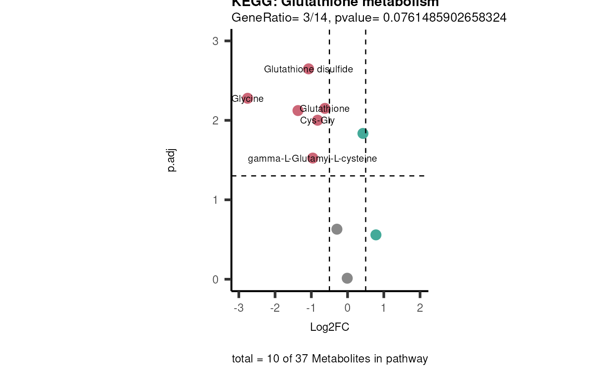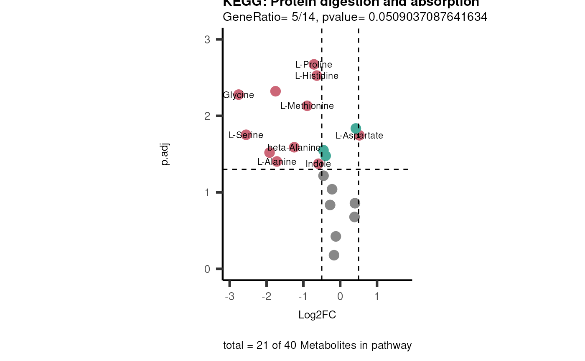
<div class="progress-bar progress-bar-success" style="width: 550%"></div>4. Metabolite Clustering Analysis
<div class="progress-bar progress-bar-success" style="width: 550%"></div>Metabolite Clustering Analysis (MCA) is a module, which
includes different functions to enable clustering of metabolites into
groups either based on logical regulatory rules. This can be
particularly useful if one has multiple conditions and aims to find
patterns in the data.
MCA-2Cond
This metabolite clustering method is based on the Regulatory
Clustering method (RCM) that was developed as part of the Signature
Regulatory Clustering (SiRCle) model (Mora et al.
(2024)). As part of the SiRCleR
package, also variation of the initial RCM method are proposed as
clustering based on two comparisons (e.g. KO versus WT in hypoxia and in
normoxia).
Here we set two different thresholds, one for the differential
metabolite abundance (Log2FC) and one for the
significance (e.g. p.adj). This will define if a feature (=
metabolite) is assigned into:
1. “UP”, which means a metabolite is
significantly up-regulated in the underlying comparison.
2. “DOWN”, which means a metabolite is
significantly down-regulated in the underlying comparison.
3. “No Change”, which means a metabolite does
not change significantly in the underlying comparison and/or is not
defined as up-regulated/down-regulated based on the Log2FC threshold
chosen.
Therebye “No Change” is further subdivided into four states:
1. “Not Detected”, which means a metabolite is
not detected in the underlying comparison.
2. “Not Significant”, which means a metabolite
is not significant in the underlying comparison.
3. “Significant positive”, which means a
metabolite is significant in the underlying comparison and the
differential metabolite abundance is positive, yet does not meet the
threshold set for “UP” (e.g. Log2FC >1 = “UP” and we have a
significant Log2FC=0.8).
4. “Significant negative”, which means a
metabolite is significant in the underlying comparison and the
differential metabolite abundance is negative, yet does not meet the
threshold set for “DOWN”.
This definition is done individually for each comparison and will impact
in which metabolite cluster a metabolite is sorted into.
Since we have two comparisons, we can choose between different
Background settings, which defines which features will be considered for
the clusters (e.g. you could include only features (= metabolites) that
are detected in both comparisons, removing the rest of the features).The
background methods method_background are the following from
1.1. - 1.4. from most restrictive to least
restrictive:
1.1. C1&C2: Most stringend background
setting and will lead to a small number of metabolites.
1.2. C1: Focus is on the metabolite abundance
of Condition 1 (C1).
1.3. C2: Focus is on the metabolite abundance
of Condition 2 (C2).
1.4. C1|C2: Least stringent background method,
since a metabolite will be included in the input if it has been detected
on one of the two conditions.
Lastly, we will get clusters of metabolites that are defined by the
metabolite change in the two conditions. For example, if Alanine is “UP”
based on the thresholds in both comparisons it will be sorted into the
cluster “core_UP”. As there are two 6-state6 transitions between the
comparisons, the flows are summarised into smaller amount of metabolite
clusters using different Regulation Groupings (RG): 1. RG1_All
2. RG2_Significant taking into account genes that are significant (UP,
DOWN, significant positive, significant negative)
3. RG3_SignificantChange only takes into account genes that have
significant changes (UP, DOWN).
# Example of all possible flows:
data(mca_twocond_rules)
MCA2Cond_Rules <- mca_twocond_rules| Cond1 | Cond2 | RG1_All | RG2_Significant | RG3_SignificantChange |
|---|---|---|---|---|
| DOWN | DOWN | Cond1 DOWN + Cond2 DOWN | Core_DOWN | Core_DOWN |
| DOWN | Not Detected | Cond1 DOWN + Cond2 Not Detected | Cond1_DOWN | Cond1_DOWN |
| DOWN | Not Significant | Cond1 DOWN + Cond2 Not Significant | Cond1_DOWN | Cond1_DOWN |
| DOWN | Significant Negative | Cond1 DOWN + Cond2 Significant Negative | Core_DOWN | Cond1_DOWN |
| DOWN | Significant Positive | Cond1 DOWN + Cond2 Significant Positive | Opposite | Cond1_DOWN |
| DOWN | UP | Cond1 DOWN + Cond2 UP | Opposite | Opposite |
| UP | DOWN | Cond1 UP + Cond2 DOWN | Opposite | Opposite |
| UP | Not Detected | Cond1 UP + Cond2 Not Detected | Cond1_UP | Cond1_UP |
| UP | Not Significant | Cond1 UP + Cond2 Not Significant | Cond1_UP | Cond1_UP |
| UP | Significant Negative | Cond1 UP + Cond2 Significant Negative | Opposite | Cond1_UP |
| UP | Significant Positive | Cond1 UP + Cond2 Significant Positive | Core_UP | Cond1_UP |
| UP | UP | Cond1 UP + Cond2 UP | Core_UP | Core_UP |
| Not Detected | DOWN | Cond1 Not Detected + Cond2 DOWN | Cond2_DOWN | Cond2_DOWN |
| Not Detected | Not Detected | Cond1 Not Detected + Cond2 Not Detected | None | None |
| Not Detected | Not Significant | Cond1 Not Detected + Cond2 Not Significant | None | None |
| Not Detected | Significant Negative | Cond1 Not Detected + Cond2 Significant Negative | None | None |
| Not Detected | Significant Positive | Cond1 Not Detected + Cond2 Significant Positive | None | None |
| Not Detected | UP | Cond1 Not Detected + Cond2 UP | Cond2_UP | Cond2_UP |
| Significant Negative | DOWN | Cond1 Significant Negative + Cond2 DOWN | Core_DOWN | Cond2_DOWN |
| Significant Negative | Not Detected | Cond1 Significant Negative + Cond2 Not Detected | None | None |
| Significant Negative | Not Significant | Cond1 Significant Negative + Cond2 Not Significant | None | None |
| Significant Negative | Significant Negative | Cond1 Significant Negative + Cond2 Significant Negative | None | None |
| Significant Negative | Significant Positive | Cond1 Significant Negative + Cond2 Significant Positive | None | None |
| Significant Negative | UP | Cond1 Significant Negative + Cond2 UP | Opposite | Cond2_UP |
| Significant Positive | DOWN | Cond1 Significant Positive + Cond2 DOWN | Opposite | Cond2_DOWN |
| Significant Positive | Not Detected | Cond1 Significant Positive + Cond2 Not Detected | None | None |
| Significant Positive | Not Significant | Cond1 Significant Positive + Cond2 Not Significant | None | None |
| Significant Positive | Significant Negative | Cond1 Significant Positive + Cond2 Significant Negative | None | None |
| Significant Positive | Significant Positive | Cond1 Significant Positive + Cond2 Significant Positive | None | None |
| Significant Positive | UP | Cond1 Significant Positive + Cond2 UP | Core_UP | Cond2_UP |
| Not Significant | DOWN | Cond1 Not Significant + Cond2 DOWN | Cond2_DOWN | Cond2_DOWN |
| Not Significant | Not Detected | Cond1 Not Significant + Cond2 Not Detected | None | None |
| Not Significant | Not Significant | Cond1 Not Significant + Cond2 Not Significant | None | None |
| Not Significant | Significant Negative | Cond1 Not Significant + Cond2 Significant Negative | None | None |
| Not Significant | Significant Positive | Cond1 Not Significant + Cond2 Significant Positive | None | None |
| Not Significant | UP | Cond1 Not Significant + Cond2 UP | Cond1_UP | Cond1_UP |
For a detailed example of the mca_2cond() function visit
the extended vignette Standard
metabolomics data.
MCA-CoRe
This metabolite clustering method is based on logical regulatory
rules to sort metabolites into metabolite clusters. Here you need
intracellular metabolomics and corresponding consumption-release
metabolomics.
Here we will define if a feature (= metabolite) is assigned into:
1. “UP”, which means a metabolite is
significantly up-regulated in the underlying comparison.
2. “DOWN”, which means a metabolite is
significantly down-regulated in the underlying comparison.
3. “No Change”, which means a metabolite does
not change significantly in the underlying comparison and/or is not
defined as up-regulated/down-regulated based on the Log2FC threshold
chosen.
Therebye “No Change” is further subdivided into four states:
1. “Not Detected”, which means a metabolite is
not detected in the underlying comparison.
2. “Not Significant”, which means a metabolite
is not significant in the underlying comparison.
3. “Significant positive”, which means a
metabolite is significant in the underlying comparison and the
differential metabolite abundance is positive, yet does not meet the
threshold set for “UP” (e.g. Log2FC >1 = “UP” and we have a
significant Log2FC=0.8).
4. “Significant negative”, which means a
metabolite is significant in the underlying comparison and the
differential metabolite abundance is negative, yet does not meet the
threshold set for “DOWN”.
Lastly, we also take into account the core direction, meaning if a
metabolite was:
1. “Released”, which means is released into
the media in both conditions of the underlying comparison.
2. “Consumed”, which means is consumed from
the media in both conditions of the underlying comparison.
3. “Released/Consumed”, which means is
consumed/released in one condition, whilst the opposite occurs in the
second condition of the underlying comparison.
4. “Not Detected”, which means a metabolite is
not detected in the underlying comparison.
This definition is done individually for each comparison and will impact
in which metabolite cluster a metabolite is sorted into.
Since we have two comparisons (Intracellular and core), we can choose
between different Background settings, which defines which features will
be considered for the clusters (e.g. you could include only features (=
metabolites) that are detected in both comparisons, removing the rest of
the features).The background methods method_background are
the following from 1.1. - 1.4. from most
restrictive to least restrictive:
1.1. Intra&core: Most stringend background
setting and will lead to a small number of metabolites.
1.2. core: Focus is on the metabolite
abundance of the core.
1.3. Intra: Focus is on the metabolite
abundance of intracellular.
1.4. Intra|core: Least stringent background
method, since a metabolite will be included in the input if it has been
detected on one of the two conditions.
Lastly, we will get clusters of metabolites that are defined by the
metabolite change in the two conditions. For example, if Alanine is “UP”
based on the thresholds in both comparisons it will be sorted into the
cluster “core_UP”. As there are three 6-state6-state4 transitions
between the comparisons, the flows are summarised into smaller amount of
metabolite clusters using different Regulation Groupings (RG): 1.
RG1_All
2. RG2_Significant taking into account genes that are significant (UP,
DOWN, significant positive, significant negative)
3. RG3_SignificantChange only takes into account genes that have
significant changes (UP, DOWN).
In order to define which group a metabolite is assigned to, we set two
different thresholds. For intracellular those are based on the
differential metabolite abundance (Log2FC) and the
significance (e.g. p.adj). For the core data this is based
on the Log2 Distance and the significance
(e.g. p.adj). For Log2FC we recommend a threshold of 0.5 or
1, whilst for the Log2 Distance one should check the
distance ranges and base the threshold on this.
Regulatory rules:
# Example of all possible flows:
data(mca_core_rules)
MCA_CoRe_Rule <- mca_core_rules| Intra | CoRe | Core_Direction | RG1_All | R2_Significant | RG3_Change |
|---|---|---|---|---|---|
| DOWN | DOWN | Released | Intra DOWN+ CoRe DOWN_Released | Both_DOWN (Released) | Both_DOWN (Released) |
| DOWN | Not Detected | Not Detected | Intra DOWN+ CoRe Not Detected | None | None |
| DOWN | Not Significant | Released | Intra DOWN+ CoRe Not Significant_Released | None | None |
| DOWN | Significant Negative | Released | Intra DOWN+ CoRe Significant Negative_Released | Both_DOWN (Released) | None |
| DOWN | Significant Positive | Released | Intra DOWN+ CoRe Significant Positive_Released | Opposite (Released UP) | None |
| DOWN | UP | Released | Intra DOWN+ CoRe UP_Released | Opposite (Released UP) | Opposite (Released UP) |
| UP | DOWN | Released | Intra UP+ CoRe DOWN_Released | Opposite (Released DOWN) | Opposite (Released DOWN) |
| UP | Not Detected | Not Detected | Intra UP+ CoRe Not Detected | None | None |
| UP | Not Significant | Released | Intra UP+ CoRe Not Significant_Released | None | None |
| UP | Significant Negative | Released | Intra UP+ CoRe Significant Negative_Released | Opposite (Released UP) | None |
| UP | Significant Positive | Released | Intra UP+ CoRe Significant Positive_Released | Both_UP (Released) | None |
| UP | UP | Released | Intra UP+ CoRe UP_Released | Both_UP (Released) | Both_UP (Released) |
| Not Detected | DOWN | Released | Intra Not Detected+ CoRe DOWN_Released | CoRe_DOWN (Released) | CoRe_DOWN (Released) |
| Not Detected | Not Detected | Not Detected | Intra Not Detected+ CoRe Not Detected | None | None |
| Not Detected | Not Significant | Released | Intra Not Detected+ CoRe Not Significant_Released | None | None |
| Not Detected | Significant Negative | Released | Intra Not Detected+ CoRe Significant Negative_Released | None | None |
| Not Detected | Significant Positive | Released | Intra Not Detected+ CoRe Significant Positive_Released | None | None |
| Not Detected | UP | Released | Intra Not Detected+ CoRe UP_Released | CoRe_UP (Released) | CoRe_UP (Released) |
| Significant Negative | DOWN | Released | Intra Significant Negative+ CoRe DOWN_Released | Both_DOWN (Released) | CoRe_DOWN (Released) |
| Significant Negative | Not Detected | Not Detected | Intra Significant Negative+ CoRe Not Detected | None | None |
| Significant Negative | Not Significant | Released | Intra Significant Negative+ CoRe Not Significant_Released | None | None |
| Significant Negative | Significant Negative | Released | Intra Significant Negative+ CoRe Significant Negative_Released | None | None |
| Significant Negative | Significant Positive | Released | Intra Significant Negative+ CoRe Significant Positive_Released | None | None |
| Significant Negative | UP | Released | Intra Significant Negative+ CoRe UP_Released | Opposite (Released UP) | CoRe_UP (Released) |
| Significant Positive | DOWN | Released | Intra Significant Positive+ CoRe DOWN_Released | Opposite (Released DOWN) | CoRe_DOWN (Released) |
| Significant Positive | Not Detected | Not Detected | Intra Significant Positive+ CoRe Not Detected | None | None |
| Significant Positive | Not Significant | Released | Intra Significant Positive+ CoRe Not Significant_Released | None | None |
| Significant Positive | Significant Negative | Released | Intra Significant Positive+ CoRe Significant Negative_Released | None | None |
| Significant Positive | Significant Positive | Released | Intra Significant Positive+ CoRe Significant Positive_Released | None | None |
| Significant Positive | UP | Released | Intra Significant Positive+ CoRe UP_Released | Both_UP (Released) | CoRe_UP (Released) |
| Not Significant | DOWN | Released | Intra Not Significant+ CoRe DOWN_Released | CoRe_DOWN (Released) | CoRe_DOWN (Released) |
| Not Significant | Not Detected | Not Detected | Intra Not Significant+ CoRe Not Detected | None | None |
| Not Significant | Not Significant | Released | Intra Not Significant+ CoRe Not Significant_Released | None | None |
| Not Significant | Significant Negative | Released | Intra Not Significant+ CoRe Significant Negative_Released | None | None |
| Not Significant | Significant Positive | Released | Intra Not Significant+ CoRe Significant Positive_Released | None | None |
| Not Significant | UP | Released | Intra Not Significant+ CoRe UP_Released | CoRe_UP (Released) | CoRe_UP (Released) |
| DOWN | DOWN | Consumed | Intra DOWN+ CoRe DOWN_Consumed | Both_DOWN (Consumed) | Both_DOWN (Consumed) |
| DOWN | Not Detected | Not Detected | Intra DOWN+ CoRe Not Detected | None | None |
| DOWN | Not Significant | Consumed | Intra DOWN+ CoRe Not Significant_Consumed | None | None |
| DOWN | Significant Negative | Consumed | Intra DOWN+ CoRe Significant Negative_Consumed | Both_DOWN (Consumed) | None |
| DOWN | Significant Positive | Consumed | Intra DOWN+ CoRe Significant Positive_Consumed | Opposite (Consumed UP) | None |
| DOWN | UP | Consumed | Intra DOWN+ CoRe UP_Consumed | Opposite (Consumed UP) | Opposite (Consumed UP) |
| UP | DOWN | Consumed | Intra UP+ CoRe DOWN_Consumed | Opposite (Consumed DOWN) | Opposite (Consumed DOWN) |
| UP | Not Detected | Not Detected | Intra UP+ CoRe Not Detected | None | None |
| UP | Not Significant | Consumed | Intra UP+ CoRe Not Significant_Consumed | None | None |
| UP | Significant Negative | Consumed | Intra UP+ CoRe Significant Negative_Consumed | Opposite (Consumed UP) | None |
| UP | Significant Positive | Consumed | Intra UP+ CoRe Significant Positive_Consumed | Both_UP (Consumed) | None |
| UP | UP | Consumed | Intra UP+ CoRe UP_Consumed | Both_UP (Consumed) | Both_UP (Consumed) |
| Not Detected | DOWN | Consumed | Intra Not Detected+ CoRe DOWN_Consumed | CoRe_DOWN (Consumed) | CoRe_DOWN (Consumed) |
| Not Detected | Not Detected | Not Detected | Intra Not Detected+ CoRe Not Detected | None | None |
| Not Detected | Not Significant | Consumed | Intra Not Detected+ CoRe Not Significant_Consumed | None | None |
| Not Detected | Significant Negative | Consumed | Intra Not Detected+ CoRe Significant Negative_Consumed | None | None |
| Not Detected | Significant Positive | Consumed | Intra Not Detected+ CoRe Significant Positive_Consumed | None | None |
| Not Detected | UP | Consumed | Intra Not Detected+ CoRe UP_Consumed | CoRe_UP (Consumed) | CoRe_UP (Consumed) |
| Significant Negative | DOWN | Consumed | Intra Significant Negative+ CoRe DOWN_Consumed | Both_DOWN (Consumed) | CoRe_DOWN (Consumed) |
| Significant Negative | Not Detected | Not Detected | Intra Significant Negative+ CoRe Not Detected | None | None |
| Significant Negative | Not Significant | Consumed | Intra Significant Negative+ CoRe Not Significant_Consumed | None | None |
| Significant Negative | Significant Negative | Consumed | Intra Significant Negative+ CoRe Significant Negative_Consumed | None | None |
| Significant Negative | Significant Positive | Consumed | Intra Significant Negative+ CoRe Significant Positive_Consumed | None | None |
| Significant Negative | UP | Consumed | Intra Significant Negative+ CoRe UP_Consumed | Opposite (Consumed UP) | CoRe_UP (Consumed) |
| Significant Positive | DOWN | Consumed | Intra Significant Positive+ CoRe DOWN_Consumed | Opposite (Consumed DOWN) | CoRe_DOWN (Consumed) |
| Significant Positive | Not Detected | Not Detected | Intra Significant Positive+ CoRe Not Detected | None | None |
| Significant Positive | Not Significant | Consumed | Intra Significant Positive+ CoRe Not Significant_Consumed | None | None |
| Significant Positive | Significant Negative | Consumed | Intra Significant Positive+ CoRe Significant Negative_Consumed | None | None |
| Significant Positive | Significant Positive | Consumed | Intra Significant Positive+ CoRe Significant Positive_Consumed | None | None |
| Significant Positive | UP | Consumed | Intra Significant Positive+ CoRe UP_Consumed | Both_UP (Consumed) | CoRe_UP (Consumed) |
| Not Significant | DOWN | Consumed | Intra Not Significant+ CoRe DOWN_Consumed | CoRe_DOWN (Consumed) | CoRe_DOWN (Consumed) |
| Not Significant | Not Detected | Not Detected | Intra Not Significant+ CoRe Not Detected | None | None |
| Not Significant | Not Significant | Consumed | Intra Not Significant+ CoRe Not Significant_Consumed | None | None |
| Not Significant | Significant Negative | Consumed | Intra Not Significant+ CoRe Significant Negative_Consumed | None | None |
| Not Significant | Significant Positive | Consumed | Intra Not Significant+ CoRe Significant Positive_Consumed | None | None |
| Not Significant | UP | Consumed | Intra Not Significant+ CoRe UP_Consumed | CoRe_UP (Consumed) | CoRe_UP (Consumed) |
| DOWN | DOWN | Released/Consumed | Intra DOWN + CoRe DOWN_Released/Consumed | Both_DOWN (Released/Consumed) | Both_DOWN (Released/Consumed) |
| DOWN | Not Detected | Not Detected | Intra DOWN + CoRe Not Detected | None | None |
| DOWN | Not Significant | Released/Consumed | Intra DOWN + CoRe Not Significant_Released/Consumed | None | None |
| DOWN | Significant Negative | Released/Consumed | Intra DOWN + CoRe Significant Negative_Released/Consumed | Both_DOWN (Released/Consumed) | None |
| DOWN | Significant Positive | Released/Consumed | Intra DOWN + CoRe Significant Positive_Released/Consumed | Opposite (Released/Consumed UP) | None |
| DOWN | UP | Released/Consumed | Intra DOWN + CoRe UP_Released/Consumed | Opposite (Released/Consumed UP) | Opposite (Released/Consumed UP) |
| UP | DOWN | Released/Consumed | Intra UP + CoRe DOWN_Released/Consumed | Opposite (Released/Consumed DOWN) | Opposite (Released/Consumed DOWN) |
| UP | Not Detected | Not Detected | Intra UP + CoRe Not Detected | None | None |
| UP | Not Significant | Released/Consumed | Intra UP + CoRe Not Significant_Released/Consumed | None | None |
| UP | Significant Negative | Released/Consumed | Intra UP + CoRe Significant Negative_Released/Consumed | Opposite (Released/Consumed UP) | None |
| UP | Significant Positive | Released/Consumed | Intra UP + CoRe Significant Positive_Released/Consumed | Both_UP (Released/Consumed) | None |
| UP | UP | Released/Consumed | Intra UP + CoRe UP_Released/Consumed | Both_UP (Released/Consumed) | Both_UP (Released/Consumed) |
| Not Detected | DOWN | Released/Consumed | Intra Not Detected + CoRe DOWN_Released/Consumed | CoRe_DOWN (Released/Consumed) | CoRe_DOWN (Released/Consumed) |
| Not Detected | Not Detected | Not Detected | Intra Not Detected + CoRe Not Detected | None | None |
| Not Detected | Not Significant | Released/Consumed | Intra Not Detected + CoRe Not Significant_Released/Consumed | None | None |
| Not Detected | Significant Negative | Released/Consumed | Intra Not Detected + CoRe Significant Negative_Released/Consumed | None | None |
| Not Detected | Significant Positive | Released/Consumed | Intra Not Detected + CoRe Significant Positive_Released/Consumed | None | None |
| Not Detected | UP | Released/Consumed | Intra Not Detected + CoRe UP_Released/Consumed | CoRe_UP (Released/Consumed) | CoRe_UP (Released/Consumed) |
| Significant Negative | DOWN | Released/Consumed | Intra Significant Negative + CoRe DOWN_Released/Consumed | Both_DOWN (Released/Consumed) | CoRe_DOWN (Released/Consumed) |
| Significant Negative | Not Detected | Not Detected | Intra Significant Negative + CoRe Not Detected | None | None |
| Significant Negative | Not Significant | Released/Consumed | Intra Significant Negative + CoRe Not Significant_Released/Consumed | None | None |
| Significant Negative | Significant Negative | Released/Consumed | Intra Significant Negative + CoRe Significant Negative_Released/Consumed | None | None |
| Significant Negative | Significant Positive | Released/Consumed | Intra Significant Negative + CoRe Significant Positive_Released/Consumed | None | None |
| Significant Negative | UP | Released/Consumed | Intra Significant Negative + CoRe UP_Released/Consumed | Opposite (Released/Consumed UP) | CoRe_UP (Released/Consumed) |
| Significant Positive | DOWN | Released/Consumed | Intra Significant Positive + CoRe DOWN_Released/Consumed | Opposite (Released/Consumed DOWN) | CoRe_DOWN (Released/Consumed) |
| Significant Positive | Not Detected | Not Detected | Intra Significant Positive + CoRe Not Detected | None | None |
| Significant Positive | Not Significant | Released/Consumed | Intra Significant Positive + CoRe Not Significant_Released/Consumed | None | None |
| Significant Positive | Significant Negative | Released/Consumed | Intra Significant Positive + CoRe Significant Negative_Released/Consumed | None | None |
| Significant Positive | Significant Positive | Released/Consumed | Intra Significant Positive + CoRe Significant Positive_Released/Consumed | None | None |
| Significant Positive | UP | Released/Consumed | Intra Significant Positive + CoRe UP_Released/Consumed | Both_UP (Released/Consumed) | CoRe_UP (Released/Consumed) |
| Not Significant | DOWN | Released/Consumed | Intra Not Significant + CoRe DOWN_Released/Consumed | CoRe_DOWN (Released/Consumed) | CoRe_DOWN (Released/Consumed) |
| Not Significant | Not Detected | Not Detected | Intra Not Significant + CoRe Not Detected | None | None |
| Not Significant | Not Significant | Released/Consumed | Intra Not Significant + CoRe Not Significant_Released/Consumed | None | None |
| Not Significant | Significant Negative | Released/Consumed | Intra Not Significant + CoRe Significant Negative_Released/Consumed | None | None |
| Not Significant | Significant Positive | Released/Consumed | Intra Not Significant + CoRe Significant Positive_Released/Consumed | None | None |
| Not Significant | UP | Released/Consumed | Intra Not Significant + CoRe UP_Released/Consumed | CoRe_UP (Released/Consumed) | CoRe_UP (Released/Consumed) |
For a detailed example of the mca_core() function visit
the extended vignette Consumption-Release
(CoRe) metabolomics data from cell culture media.
ORA on each metabolite cluster
As explained in detail above, Over Representation Analysis (ORA) is a
pathway enrichment analysis (PEA) method. As ORA is based on the Fishers
exact test it is perfect to test if a set of features (=metabolic
pathways) are over-represented in the selection of features (= clusters
of metabolites) from the data in comparison to all measured features
(all metabolites). In detail, cluster_ora() will perform
ORA on each of the metabolite clusters we got as a result of performing
mca_2cond or mca_core using all metabolites as
the background. For a detailed example of the cluster_ora()
function visit the extended vignette Consumption-Release
(CoRe) metabolomics data from cell culture media or Standard
metabolomics data.
Viz
The big advantages of the MetaProViz visualization
module is its flexible and easy usage, which we will showcase below and
that the figures are saved in a publication ready style and format. For
instance, the x- and y-axis size will always be adjusted for the amount
of samples or features (=metabolites) plotted, or in the case of Volcano
plot and PCA plot the axis size is fixed and not affected by figure
legends or title. In this way, there is no need for many adjustments and
the figures can just be dropped into the presentation or paper and are
all in the same style.
All the VizPlotName() functions are constructed in the same
way. Indeed, with the parameter Plot_metadata_info the user
can pass a named vector with information about the metadata column that
should be used to customize the plot by colour, shape or creating
individual plots, which will all be showcased for the different plot
types. Via the parameter Plot_SettingsFile the user can
pass the metadata DF, which can be dependent on the plot type for the
samples and/or the features (=metabolites). In case of both the
parameter is named Plot_metadata_sample and
Plot_metadata_feature.
In each of those Plot_Settings, the user can label color and/or shape
based on additional information (e.g. Pathway information, Cluster
information or other other demographics like gender). Moreover, we also
enable to plot individual plots where applicable based on those MetaData
(e.g. one plot for each metabolic pathway).
We support the plot types:
- PCA plot - Superplots (Bar, Box and Violin plots) - Heatmaps - Volcano
Plots
For a detailed example of the visualisation functions visit the extended vignette Consumption-Release (CoRe) metabolomics data from cell culture media or Standard metabolomics data.
<div class="progress-bar progress-bar-success" style="width: 100%"></div>Session information
#> R version 4.5.2 (2025-10-31)
#> Platform: x86_64-pc-linux-gnu
#> Running under: Ubuntu 24.04.3 LTS
#>
#> Matrix products: default
#> BLAS: /usr/lib/x86_64-linux-gnu/openblas-pthread/libblas.so.3
#> LAPACK: /usr/lib/x86_64-linux-gnu/openblas-pthread/libopenblasp-r0.3.26.so; LAPACK version 3.12.0
#>
#> locale:
#> [1] LC_CTYPE=en_US.UTF-8 LC_NUMERIC=C LC_TIME=en_US.UTF-8 LC_COLLATE=en_US.UTF-8
#> [5] LC_MONETARY=en_US.UTF-8 LC_MESSAGES=en_US.UTF-8 LC_PAPER=en_US.UTF-8 LC_NAME=C
#> [9] LC_ADDRESS=C LC_TELEPHONE=C LC_MEASUREMENT=en_US.UTF-8 LC_IDENTIFICATION=C
#>
#> time zone: Etc/UTC
#> tzcode source: system (glibc)
#>
#> attached base packages:
#> [1] stats graphics grDevices utils datasets methods base
#>
#> other attached packages:
#> [1] tibble_3.3.0 ggfortify_0.4.19 ggplot2_4.0.1 rlang_1.1.6 dplyr_1.1.4 magrittr_2.0.4
#> [7] MetaProViz_3.99.25 BiocStyle_2.38.0
#>
#> loaded via a namespace (and not attached):
#> [1] RColorBrewer_1.1-3 rstudioapi_0.17.1 jsonlite_2.0.0 ggbeeswarm_0.7.2
#> [5] farver_2.1.2 rmarkdown_2.30 fs_1.6.6 ragg_1.5.0
#> [9] vctrs_0.6.5 memoise_2.0.1 rstatix_0.7.3 htmltools_0.5.8.1
#> [13] S4Arrays_1.10.0 progress_1.2.3 curl_7.0.0 ComplexUpset_1.3.3
#> [17] decoupleR_2.16.0 broom_1.0.10 cellranger_1.1.0 SparseArray_1.10.1
#> [21] Formula_1.2-5 sass_0.4.10 parallelly_1.45.1 bslib_0.9.0
#> [25] htmlwidgets_1.6.4 desc_1.4.3 plyr_1.8.9 httr2_1.2.1
#> [29] lubridate_1.9.4 cachem_1.1.0 igraph_2.2.1 lifecycle_1.0.4
#> [33] pkgconfig_2.0.3 Matrix_1.7-4 R6_2.6.1 fastmap_1.2.0
#> [37] MatrixGenerics_1.22.0 digest_0.6.38 colorspace_2.1-2 patchwork_1.3.2
#> [41] S4Vectors_0.48.0 textshaping_1.0.4 GenomicRanges_1.62.0 RSQLite_2.4.4
#> [45] ggpubr_0.6.2 labeling_0.4.3 timechange_0.3.0 httr_1.4.7
#> [49] abind_1.4-8 compiler_4.5.2 bit64_4.6.0-1 withr_3.0.2
#> [53] S7_0.2.1 backports_1.5.0 BiocParallel_1.44.0 carData_3.0-5
#> [57] DBI_1.2.3 logger_0.4.1 OmnipathR_3.19.2 R.utils_2.13.0
#> [61] ggsignif_0.6.4 cosmosR_1.18.0 MASS_7.3-65 rappdirs_0.3.3
#> [65] DelayedArray_0.36.0 sessioninfo_1.2.3 scatterplot3d_0.3-44 gtools_3.9.5
#> [69] tools_4.5.2 vipor_0.4.7 beeswarm_0.4.0 qcc_2.7
#> [73] zip_2.3.3 R.oo_1.27.1 glue_1.8.0 grid_4.5.2
#> [77] checkmate_2.3.3 reshape2_1.4.5 generics_0.1.4 gtable_0.3.6
#> [81] tzdb_0.5.0 R.methodsS3_1.8.2 tidyr_1.3.1 hms_1.1.4
#> [85] xml2_1.5.0 car_3.1-3 XVector_0.50.0 BiocGenerics_0.56.0
#> [89] ggrepel_0.9.6 pillar_1.11.1 stringr_1.6.0 vroom_1.6.6
#> [93] limma_3.66.0 later_1.4.4 splines_4.5.2 lattice_0.22-7
#> [97] bit_4.6.0 tidyselect_1.2.1 knitr_1.50 gridExtra_2.3
#> [101] bookdown_0.45 IRanges_2.44.0 Seqinfo_1.0.0 SummarizedExperiment_1.40.0
#> [105] svglite_2.2.2 stats4_4.5.2 xfun_0.54 Biobase_2.70.0
#> [109] statmod_1.5.1 factoextra_1.0.7 matrixStats_1.5.0 pheatmap_1.0.13
#> [113] stringi_1.8.7 yaml_2.3.10 kableExtra_1.4.0 evaluate_1.0.5
#> [117] codetools_0.2-20 tcltk_4.5.2 qvalue_2.42.0 hash_2.2.6.3
#> [121] BiocManager_1.30.27 Polychrome_1.5.4 cli_3.6.5 systemfonts_1.3.1
#> [125] jquerylib_0.1.4 EnhancedVolcano_1.13.2 Rcpp_1.1.0 readxl_1.4.5
#> [129] XML_3.99-0.20 parallel_4.5.2 pkgdown_2.2.0 readr_2.1.6
#> [133] blob_1.2.4 prettyunits_1.2.0 viridisLite_0.4.2 scales_1.4.0
#> [137] writexl_1.5.4 inflection_1.3.7 purrr_1.2.0 crayon_1.5.3
#> [141] rvest_1.0.5